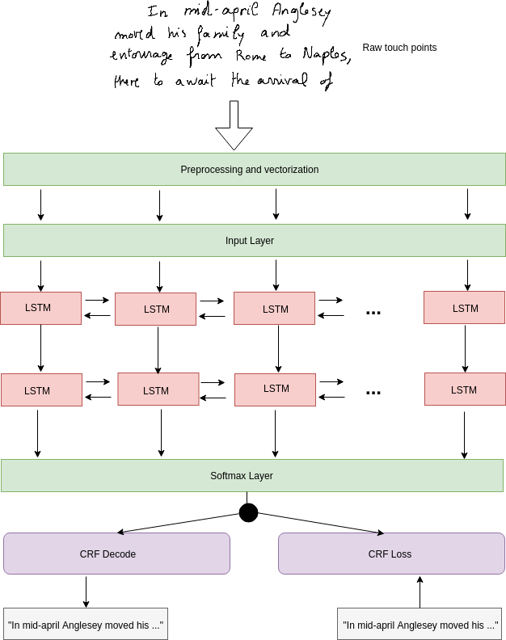

Collected the IIIT-HWS dataset and training the network on 10K vocabulary.
Online handwritten text recognition:
In order to improve the implemented Online-HTR, currently reading the literature to understand the Online handwriting
and it's processing.
Bézier curve:
Lerning the Bézier curve to implement Google online-HTR.
This implementation address the recognition of handwritten text written on a touch eanabled devices.
The digital touch enabled devices captures the handwritten input in form of points, which makes it the problem of sequence of points to
the sequence of characters generation. Each input x is a sequence points features(described in section 2.1),
and output y is a sequence of characters and the maximum output sequence is 36 chars. RNNs are cabable of learning a sequence to sequence mappinng,
Bi-LSTMs have been used to design the model(fig 1) by the authors. Paper link.
1: Dataset:
To train the online handwriting recognition system IAM-on-DB has been used which has writing samples
from 221 writers. The dataset has 13,049 lines of text which has 86,272 word instances and
forms a vocabulary of length 11,059.
More details about the IAM-On-DB can be read here.
The dataset is further divided into four sets(Training set, validation set, test set 1, test set 2)
in a ratio of 6:2:1:1.
The model takes a matrix of size 1942x10 as input(1942 is maximum timesteps for a line and 10 is the length of feature vector). The model has two layers of Bi-directional LSTM having 64 cells in both
forward and backward direction. The output of second BLSTM layer has been feeded into a dense layer of size 64(63 characters and one CTC blank) having a softmax activation.
The model has been has been shown in Fig-1 below.
The network weights were initialized with a Gaussian distribution of mean 0 and std. deviation 0.1. The network was trained with online gradient descent, using a
learning rate of 1e−4 and a momentum of 0.9 with CTC loss.
2.2: Decoding
The output of the softmax layer is a sequence of T time steps of (C + 1) classes that were decoded using
CTC decoding.

Fig.1 - Bi-LSTM HTR model.
Fig.2 - Training and validation error graph.
3: Results:
Training was stopped when performance ceased to improve on the validation set(96 epochs in our case).
After training the model was evaluated on the Test dataset, the model had performed with a character error rate of ~35%. The training and validation has been shown in Fig-2 above.
3.1: Comparision of CER with recent works
Table-1 shows the comparison of character error rate on on IAM-On-DB of this implementation with the recent state-of-art works.
Table:1 Comparision of character error rate on IAM-On-DB with recent works
System
CER[%]
Graves et al. BLSTM - 2007
~15
Graves et al. BLSTM - 2009
11.5
Frinken et al. BLSTM - 2015
12.3
Keysers et al. BLSTM - 2017
8.8
Carbune, Victor, et al. - 2019
4.02
this implementation
34.5
3.2: Model output samples:
In Table-2 the sample outputs of the network has been shown. The input samples were taken randomly from the test set.
Table:2 Model output comparison with the ground truth
Ground truth
Model Output
and now was a digniflied discreet
and how wal d aguitud rrdereet
hand After all he reflected
hand A5ter all he reflected
with a deadly finality
htth odedar thodty
had sent a letter to Mr Kennedy saying
had seut altertor Ruhedy say in
4: References:
Liwicki, Marcus, et al. "A novel approach to on-line handwriting recognition based on bidirectional long short-term memory networks." Proceedings of the 9th International Conference on Document Analysis and Recognition, ICDAR 2007. 2007.
Frinken, Volkmar, and Seiichi Uchida. "Deep BLSTM neural networks for unconstrained continuous handwritten text recognition." 2015 13th International Conference on Document Analysis and Recognition (ICDAR). IEEE, 2015.
Graves, Alex, et al. "A novel connectionist system for unconstrained handwriting recognition." IEEE transactions on pattern analysis and machine intelligence 31.5 (2008): 855-868.
Keysers, Daniel, et al. "Multi-language online handwriting recognition." IEEE transactions on pattern analysis and machine intelligence 39.6 (2016): 1180-1194.
Graves, Alex, et al. "Connectionist temporal classification: labelling unsegmented sequence data with recurrent neural networks." Proceedings of the 23rd international conference on Machine learning. ACM, 2006.